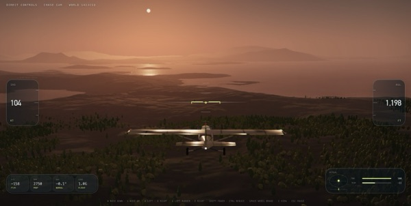
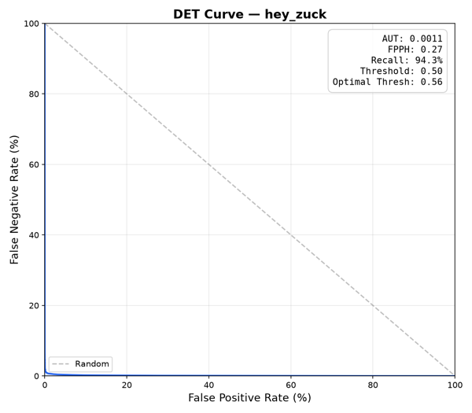
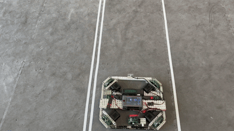
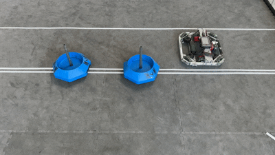
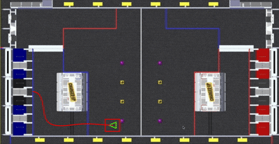
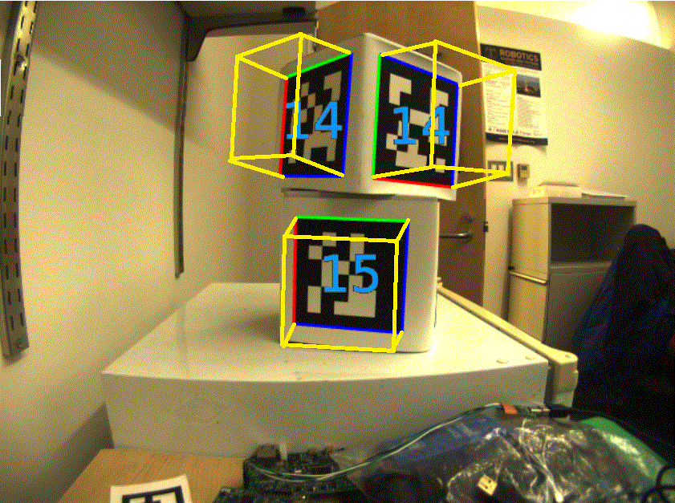
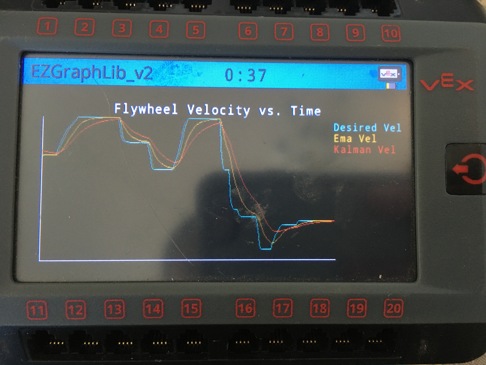
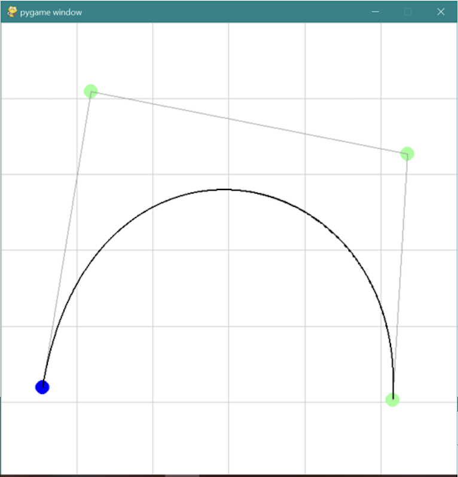
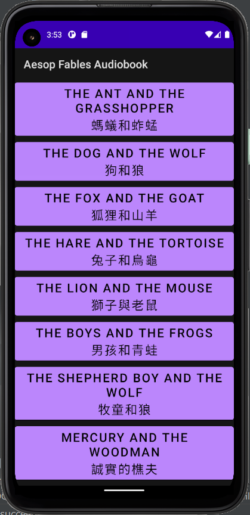

Jason Zhou |
|
| jzhou44 [at] cs [dot] washington [dot] edu | |
| LinkedIn | GitHub |
About
| 👋 Hello, I'm Jason! I'm an undergraduate at the University of Washington studying Computer Science. |
| I'm interested in the applications of Computer Science within robotics and embodied AI. I have experience with embedded systems, object-oriented programming, and application development from various projects, extracurriculars, and coursework. |
Projects
 |
Fly High |
| An endless-flight simulator in the browser. Fly a small plane over a procedurally generated world of terrain, forests, rivers, ocean, weather, and a real day and night sky. The world comes from a seed, so sharing the URL shares the exact same world. Built with TypeScript, React, and Babylon.js on WebGPU. | |
| Play it (needs a WebGPU browser) | GitHub | |
 |
Zuck (Local LLM Voice Assistant) |
| A self-hosted voice assistant. A Raspberry Pi listens for a custom-trained "Hey Zuck" wake word and streams audio to a GPU server running streaming speech-to-text, an LLM, and text-to-speech. Pictured: the wake word model's DET curve (94.3% recall at 0.27 false wakes per hour). | |
| Source code is private... for now :) | |
|
  |
HolonomicLib |
| A C++ motion planning library for holonomic drives, with API documentation and step-by-step guides for getting started. Top: spline translation with changing heading. Bottom: spline translation with no change in heading. | |
| GitHub | API docs | Guides | Video 1 | Video 2 | |
 |
On-the-fly Path Generation |
| Generates motion profiles based on spline paths at any location on the field. Generated paths avoid "no-go" zones where the robot cannot be (i.e. the white platform). | |
| GitHub | Full video | |
 |
Sensor Fusion Localization |
| Combines dead-reckoning with AprilTag-based visual odometry using a Kalman filter. | |
| GitHub | |
 |
Graphy |
| A C++ graphing library for robotics, with a simple graphing interface for data visualization. | |
| GitHub | |
 |
Bezier Curve Visualizer/Generator |
| Generates constants for bezier curves. Built with pygame. | |
| GitHub | |
|
 

|
Bilingual Audiobook App for Aesop Fables |
| An English and Mandarin audiobook app for Aesop's Fables. Created with Android Studio. | |
| GitHub |
© 2024 Jason Zhou